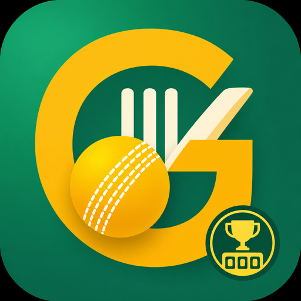
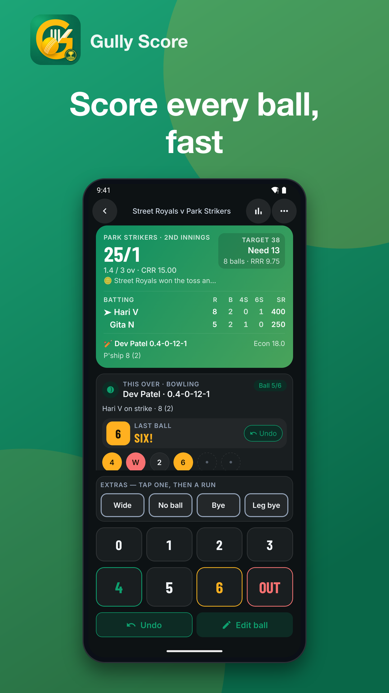
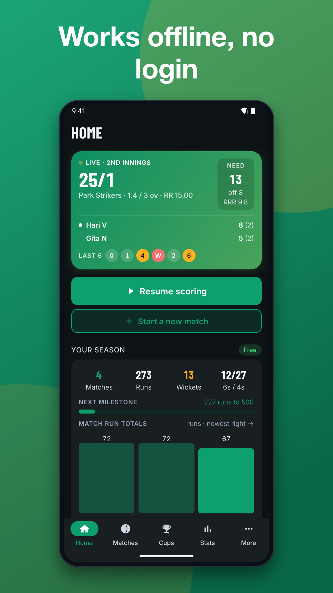
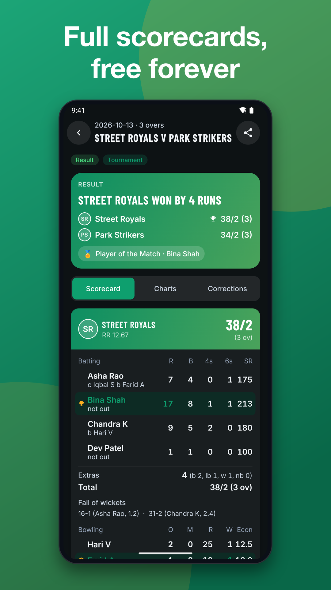
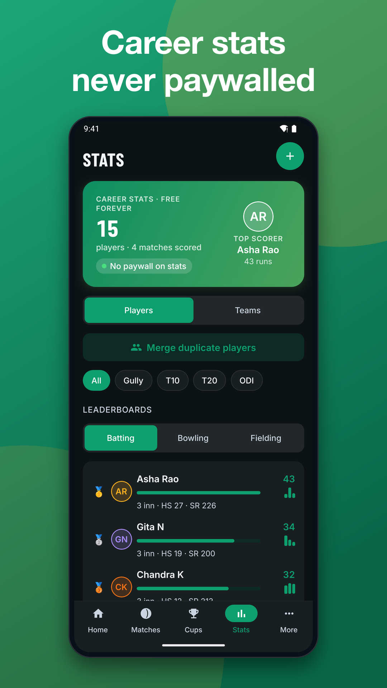
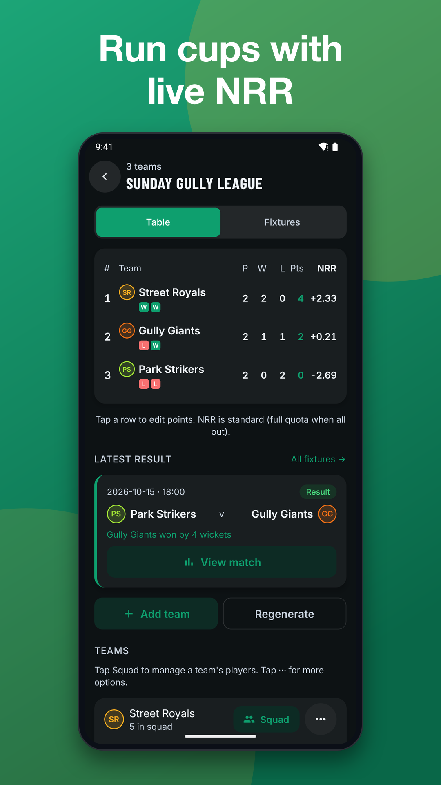
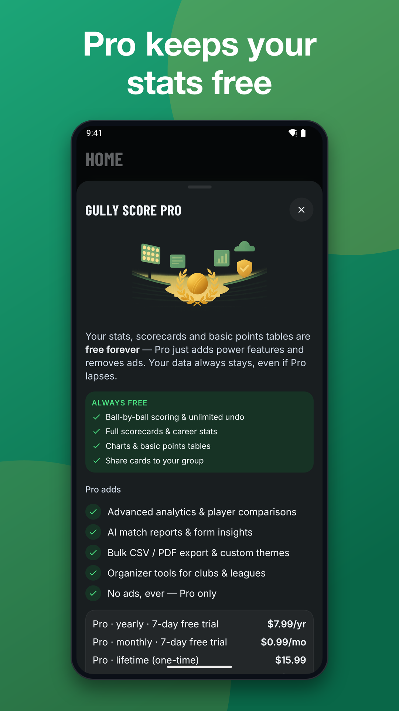

Cricket Tournament App: Scorer
Cricket tournament app with cricket scorer, fixtures, NRR table and team stats






Run your league, box cricket night or gully series with a cricket tournament app built for the ground. Set up a match in seconds, tap one big button per ball, and share the result with your WhatsApp group.
CRICKET TOURNAMENT MAKER
• Create bilateral series, leagues, named groups and custom rounds
• Generate fixtures sorted by date and time
• Points table with NRR and tie-breaks, plus an editable table with a log of manual changes
• Walkovers and teams leaving a tournament handled
• Opt-in fixture reminders before a match
CRICKET SCORER FOR EVERY FORMAT
A fast cricket scoring app with a large thumb-friendly keypad for 0–6, wides, no-balls, byes, leg-byes and all wicket types with fielder credit.
• Gully rules: one batter, last man bats, 5s and 7s, dummy runner, super ball
• Custom overs, balls per over, wickets and fewer than 11 players
• Box cricket, T10, T20 and ODI presets you can save as your own
• Free hit, super over, rain and early results, manual targets
• Score-only mode when you just need totals
• Unlimited undo and edit any past ball
LOCAL CRICKET MATCH SCORE, SHARED
Make scorecard, result, milestone and player-of-the-match images ready for WhatsApp.
CRICKET TEAM STATS AND CAREER RECORDS
• Batting and bowling cards, fall of wickets, partnerships
• Wagon wheel, worm, run-rate and over-by-over charts
• Player profiles with career stats, recent form, hat-tricks and centuries
• Head-to-head, team rankings, filters by format and year
• Merge duplicate players, edit or delete profiles
FIX MISTAKES WITH CONFIDENCE
Edit a match after the fact, swap scores, fix totals and revert changes. Every edit is listed with before and after values.
FAIR PLAY
Keep your own player roster on this phone: add players, fix names and merge duplicates any time.
FREE VS PRO
Free: unlimited scoring, all rules, scorecards, charts, personal and team stats, basic points table, tournaments, share images, local export and backup. The free version shows ads; Pro removes them.
Pro: advanced analytics, player comparisons, bulk export, custom scoreboard themes, organizer and club tools, no ads and AI match summaries. Plans, price, billing period and trial terms are shown before you subscribe, and you can cancel any time in your store subscription settings. Restore Purchases is available. If Pro lapses, you keep all your data.
AI MATCH SUMMARY
Pro includes an AI-written match report and player form insight, with a free taste. AI features need an internet connection: the match details you choose are sent through our server to an AI provider (Anthropic) for the summary and are not used for training. You can report offensive AI output in the app.
PRIVACY
No account is required to score. Match data is saved on your phone. Signing in with an email code is optional; if you sign in, your matches are also backed up to our server so you can restore them on a new phone. Scoring itself works without a network; backup, sync, the live link and AI need a connection. Data export and deletion are in the app.
Not affiliated with any league, board or team.
Download this cricket tournament app and score your next match.
Support: jeets98e@gmail.com